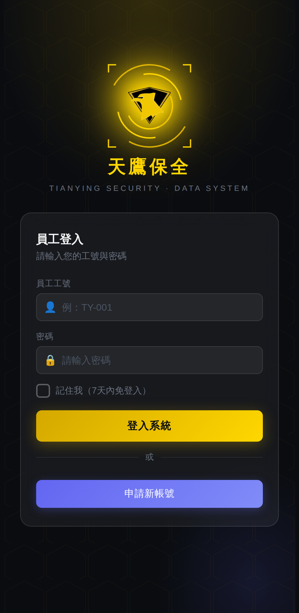
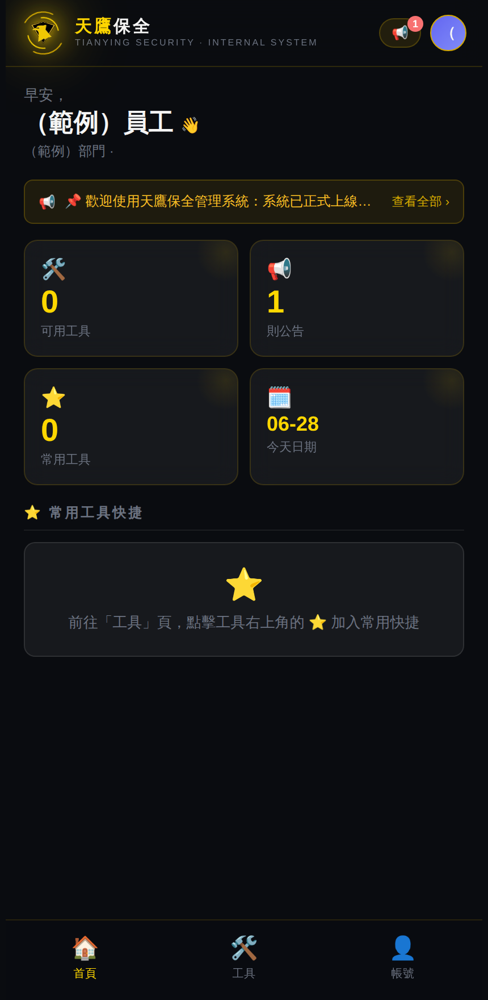
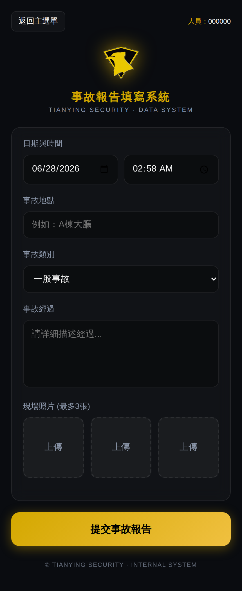
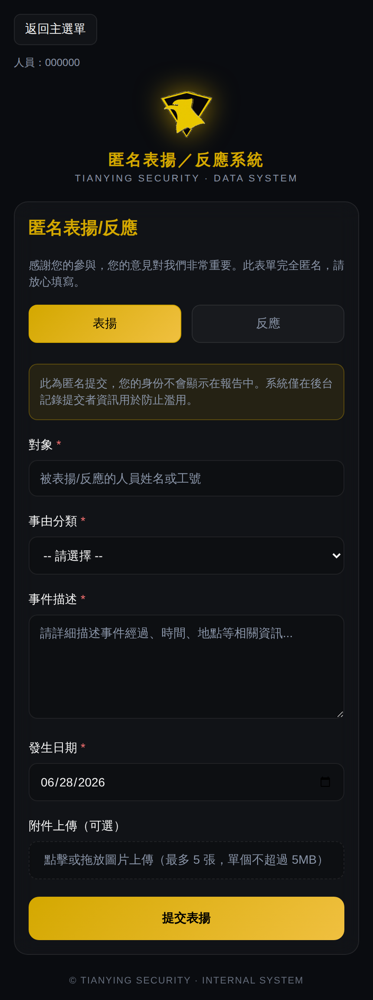
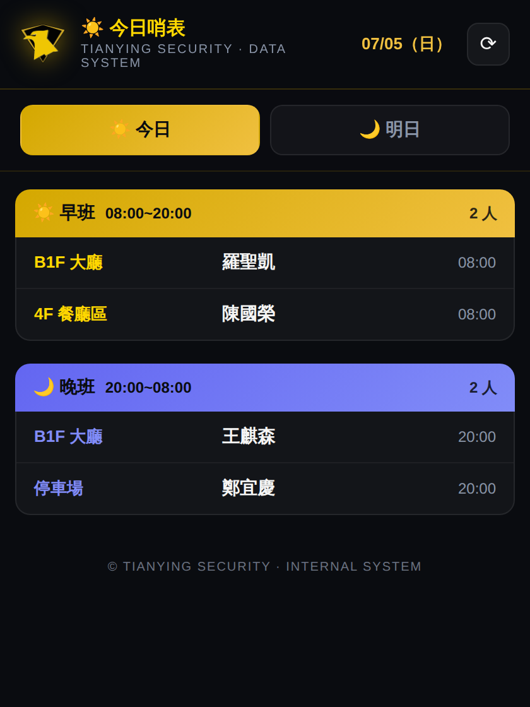
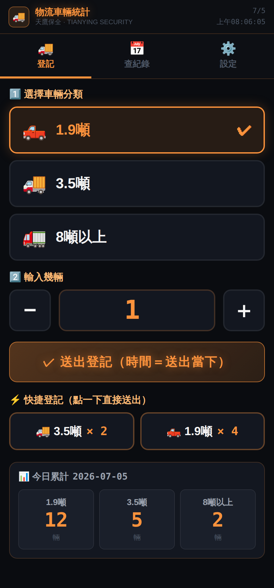

進入後可於設定處修改密碼，輸入舊密碼與兩次新密碼即可。
登入後首頁由上而下：

底部「工具」頁列出你有權限使用的工具，可用搜尋框找工具。不同職務看到的工具不同。常見工具：
| 分類 | 工具 | 用途 |
|---|---|---|
| 核心工具 | 打烊後 / 開店前進出快速登錄 | 登記廠商、監工、檢查者進出場時間 |
| 核心工具 | 今/明日哨表 | 查看今日／明日哨點排班（可切換） |
| 核心工具 | 資料上傳工具 | 上傳班表等 Excel 資料 |
| 核心工具 | 停車場車位數計算 | 計算可用車位 |
| 核心工具 | 物流車輛統計 | 登記物流貨車進出數量（三分類） |
| 人事管理 | 班表查詢 / 請假申請 | 查自己的班、線上請假 |
| 人事管理 | 帶班交接事項 | 換班交接注意事項（組長以上才看得到） |
| 現場管理 | 事故報告填寫 | 回報現場事故（含照片） |
| 資料管理 | 施工單查詢 | 查詢廠商施工單／動火申請、現場報到換證 |
| 門禁管理 | 過夜車輛登記 | 登記夜間停放車輛 |
| 緊急應變 | 緊急聯絡清單 / 匿名表揚‧反應 | 查緊急電話、匿名回報 |




只有組長／副隊長／隊長／主管／管理員才看得到，用於換班時把現場注意事項交接給下一班。
| 問題 | 解決方式 |
|---|---|
| 看不到某個工具 | 該工具未開放給你的職務，屬正常。需要請洽主管。 |
| 送出後說失敗 | 多為網路不穩，請確認訊號後重試；仍失敗回報主管。 |
| 照片上傳很慢 | 照片較大需時間，請耐心等「處理中」跑完，勿重複按。 |
| 每次都要重新登入 | 登入時勾「記住我」即可自動登入。 |
| 手機號碼開頭 0 不見 | 系統已修正，緊急聯絡清單會正確顯示開頭 0。 |